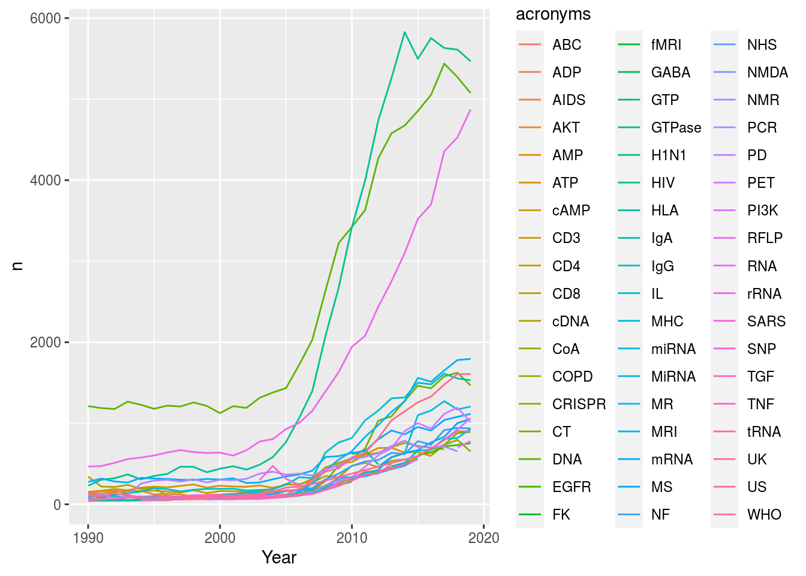
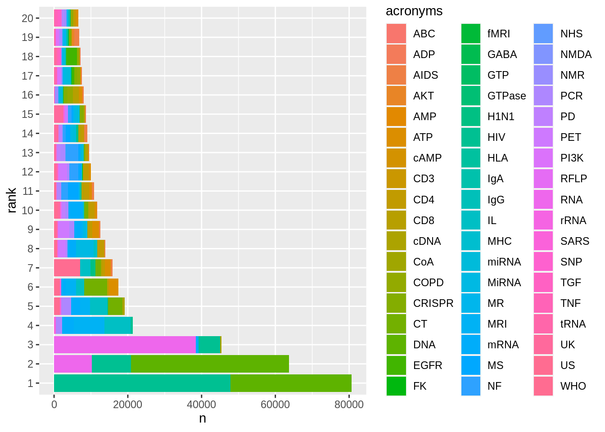
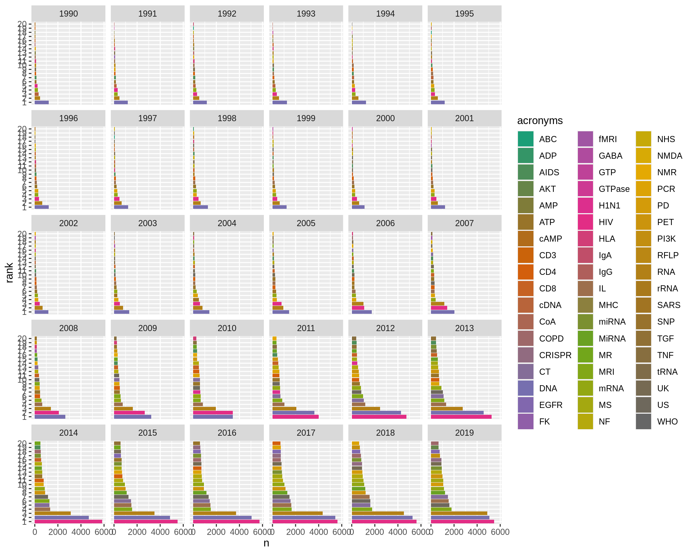
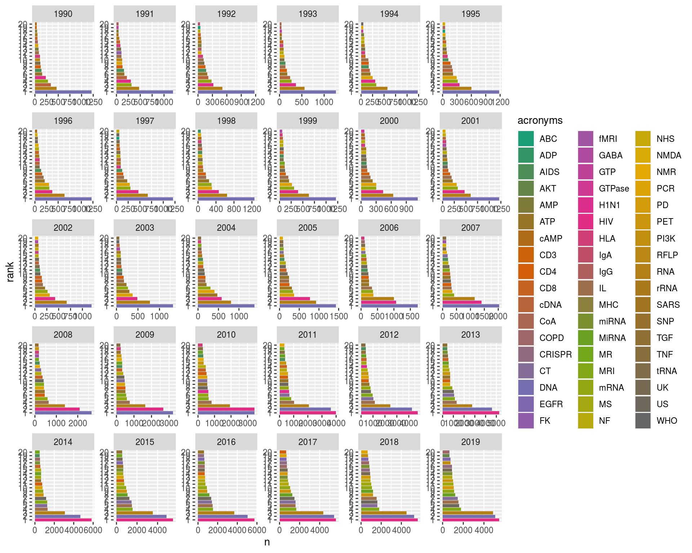
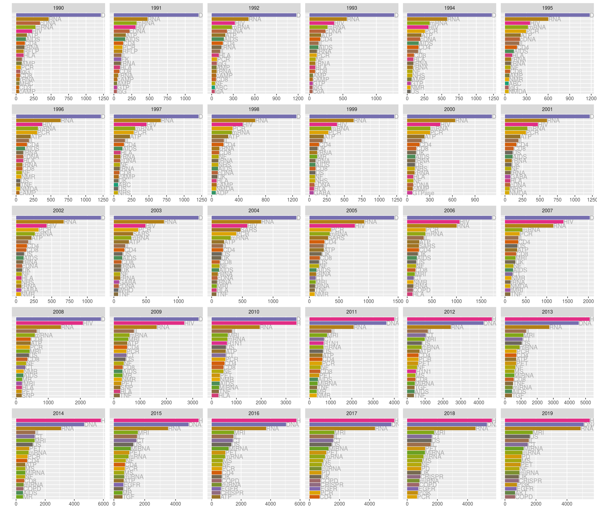

1 Animating Acronyms
Inspired by the paper, Meta-Research: The growth of acronyms in the scientific literature (radio interview here), we'll use gganimate to create an animation of the top twenty acronyms used in the titles of scientific publications 1900--2019 (see similar animation here).
If you want download and wrangle to data yourself then feel free to use this R script; however for simplicity we'll download the data we'll need directly from GitHub.
data_url <- "https://github.com/cmjt/statbiscuits/raw/master/swots/data/top_twenty.RData"
load(url(data_url))1.1 Data exploration
The R object we've loaded, named top_twenty, is a list of length 30, where each element contains a data.frame for each year with the following variables: pmid, acronyms, nchar, source, Journal.Title, ISSN, eISSN, Year, Volume, Issue, Page, DOI, PMCID, Manuscript.Id, Release.Date.
The name of each element in the list indicate the year of publication.
names(top_twenty)## [1] "1990" "1991" "1992" "1993" "1994" "1995" "1996" "1997" "1998" "1999"
## [11] "2000" "2001" "2002" "2003" "2004" "2005" "2006" "2007" "2008" "2009"
## [21] "2010" "2011" "2012" "2013" "2014" "2015" "2016" "2017" "2018" "2019"The column acronyms contains the top-twenty acronym used in the title of a publication in Journal.Title identified by pmid and PMCID. The number of characters in an acronym are given in the nchar column. Other information relating to the published article is given in the other columns.
head(top_twenty[[1]])## pmid acronyms nchar source Journal.Title ISSN eISSN Year Volume
## 1 1688383 RNA 3 Title J Virol 0022-538X 1098-5514 1990 64
## 2 1688384 mRNA 4 Title J Virol 0022-538X 1098-5514 1990 64
## 3 1688384 mRNA 4 Title J Virol 0022-538X 1098-5514 1990 64
## 4 1688464 RNA 3 Title Mol Cell Biol 0270-7306 1098-5549 1990 10
## 5 1688465 RNA 3 Title Mol Cell Biol 0270-7306 1098-5549 1990 10
## 6 1688530 RNA 3 Title EMBO J 0261-4189 1460-2075 1990 9
## Issue Page DOI PMCID Manuscript.Id Release.Date
## 1 1 222 PMC249091 live
## 2 1 239 PMC249096 live
## 3 1 239 PMC249096 live
## 4 1 184 10.1128/mcb.10.1.184 PMC360726 live
## 5 1 28 10.1128/mcb.10.1.28 PMC360709 live
## 6 1 257 PMC551656 liveAs you can imagine for the top-twenty acronyms alone there are thousands of observations each year:
sapply(top_twenty, nrow)## 1990 1991 1992 1993 1994 1995 1996 1997 1998 1999 2000 2001 2002
## 3814 3913 3923 4130 4305 4358 4409 4424 4649 4411 4535 4540 4475
## 2003 2004 2005 2006 2007 2008 2009 2010 2011 2012 2013 2014 2015
## 5196 5754 6324 7303 8610 11823 14540 17129 19374 22391 25060 26968 29226
## 2016 2017 2018 2019
## 30040 32890 33776 33779Let's look at the top-twenty acronyms in 1990:
table(top_twenty[[1]]$acronyms)##
## AIDS AMP ATP cAMP CD3 CD4 CD8 cDNA DNA HIV HLA IgG IL MHC mRNA PCR
## 139 81 155 42 43 126 58 342 1212 230 107 59 83 48 277 68
## RFLP RNA rRNA tRNA
## 108 465 51 1201.2 Format the data to suit our porposes
A long list probably isn't the best way to summarise these data - We could combine all the elements into one big dataframe (remember we have already have a column specifying year)
library(dplyr)
df <- bind_rows(top_twenty)
head(df)## pmid acronyms nchar source Journal.Title ISSN eISSN Year Volume
## 1 1688383 RNA 3 Title J Virol 0022-538X 1098-5514 1990 64
## 2 1688384 mRNA 4 Title J Virol 0022-538X 1098-5514 1990 64
## 3 1688384 mRNA 4 Title J Virol 0022-538X 1098-5514 1990 64
## 4 1688464 RNA 3 Title Mol Cell Biol 0270-7306 1098-5549 1990 10
## 5 1688465 RNA 3 Title Mol Cell Biol 0270-7306 1098-5549 1990 10
## 6 1688530 RNA 3 Title EMBO J 0261-4189 1460-2075 1990 9
## Issue Page DOI PMCID Manuscript.Id Release.Date
## 1 1 222 PMC249091 live
## 2 1 239 PMC249096 live
## 3 1 239 PMC249096 live
## 4 1 184 10.1128/mcb.10.1.184 PMC360726 live
## 5 1 28 10.1128/mcb.10.1.28 PMC360709 live
## 6 1 257 PMC551656 liveLet's count the acronyms
count <- df %>% count(acronyms)
head(count)## acronyms n
## 1 ABC 160
## 2 ADP 60
## 3 AIDS 5020
## 4 AKT 657
## 5 AMP 377
## 6 ATP 9302Not quite what we want, we forgot to group by year...
count <- df %>% group_by(Year) %>% count(acronyms)
head(count)## # A tibble: 6 x 3
## # Groups: Year [1]
## Year acronyms n
## <int> <chr> <int>
## 1 1990 AIDS 139
## 2 1990 AMP 81
## 3 1990 ATP 155
## 4 1990 cAMP 42
## 5 1990 CD3 43
## 6 1990 CD4 126Now let's sort by the most used by year and rank
ranked <- count %>%
arrange(Year, -n) %>%
mutate(rank = as.factor(1:n()))
head(ranked)## # A tibble: 6 x 4
## # Groups: Year [1]
## Year acronyms n rank
## <int> <chr> <int> <fct>
## 1 1990 DNA 1212 1
## 2 1990 RNA 465 2
## 3 1990 cDNA 342 3
## 4 1990 mRNA 277 4
## 5 1990 HIV 230 5
## 6 1990 ATP 155 61.3 Plotting
Numbers of each acronym by year
library(ggplot2)
ggplot(ranked, aes(x = Year, y = n, col = acronyms)) + geom_line() 
Quite a lot going on... What about a bar graph so we can easily compare acronyms? One thing to note is that as we've already "counted" the acronyms then we need to specify stat = "identity" in our call to geom_bar() so that ggplot() knows to use our data as bar heights. Note also that we can flip x = and y = inside aes() to switch the axes.
ggplot(ranked, aes(x = n, y = rank, fill = acronyms)) +
geom_bar(stat = "identity")
We've forgotten about year
- what about using
facet_wrap()?
The colours are awful
- how about a decent palette (e.g.,
scale_fill_brewer(palette = "Dark2"))? See others here.
The trouble with the "Dark2" palette from RColorBrewer is that it only contains 8 different colours and we need 54! No problem we can simply extend the colour palette using the colorRampPalette() function from ColorBrewer:
## We need 54 colours as there are 54 unique acronyms
library(RColorBrewer)
n.cols <- 54
mycols <- colorRampPalette(brewer.pal(8, "Dark2"))(n.cols)
head(mycols)## [1] "#1B9E77" "#349567" "#4D8D58" "#668548" "#7F7C39" "#987429"So, we use facet_wrap() to create a multi panel plot (splitting by Year) and scale_fill_manual() to specify our chosen (better) colour palette for the fill aesthetic.
ggplot(ranked, aes(x = n, y = rank, fill = acronyms)) +
geom_bar(stat = "identity") +
facet_wrap(~Year) +
scale_fill_manual(values = mycols)
Well there's quite a lot going on there; let's let the axes differ for each year as - not all counts are the same, and - not all acronyms turn up each year. We can use scales = "free" in our facet_wrap() call for this.
ggplot(ranked, aes(x = n, y = rank, fill = acronyms)) +
geom_bar(stat = "identity") +
facet_wrap(~Year, scales = "free") +
scale_fill_manual(values = mycols)
There are a number of issues with this plot; let's sort a few of them out:
- using
geom_text()we'll label each bar by the acronym it represents and left justify this text,hjust = "left" - we'll suppress the x- and y-axis labels using
xlab("")andylab("")(is there good reason to do this?) - we'll change the theme to
theme_gray(), other options discussed here - in addition to the theme we choose we may want to fine tune some other elements so using
theme()we'll suppress the y-axis ticks and labels withaxis.text.y = element_blank(),axis.ticks.y = element_blank()and scrap the needless legend usinglegend.position = "none". Remember we have the acronym labels now! - finally, to reverse the order of the factor ranks, 1...20, we use
scale_y_discrete()so that 1 is on top
plot <- ggplot(ranked, aes(x = n, y = rank, fill = acronyms)) +
geom_bar(stat = "identity") +
facet_wrap(~Year, scales = "free") +
scale_fill_manual(values = mycols) +
geom_text(aes(label = acronyms), hjust = "left", col = "darkgrey") +
xlab("") + ylab("") +
theme_gray() +
theme(axis.text.y = element_blank(),axis.ticks.y = element_blank(),legend.position = "none") +
scale_y_discrete(limits = rev(levels(ranked$rank)))
plot
There's still a lot going on! So let's us gganimate to create a racing barchart!
It's as simple as adding + transition_time()! Although we do have to use facet_null() to forget the facet_wrap() stuff (for reasons only ggplot2 wizards know). Let's also add a title specifying year using labs().
library(gganimate)
anim <- plot +
transition_time(Year) +
facet_null() + ## we have to forget facet stuff for reasons only ggplot2 wizards know
labs(title = "Year: {frame_time}")
anim